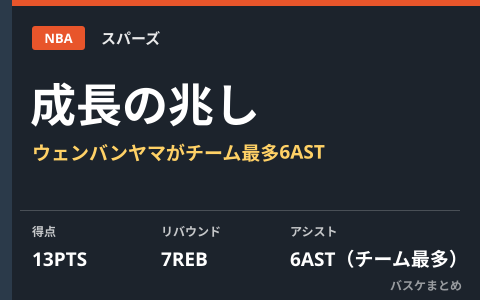
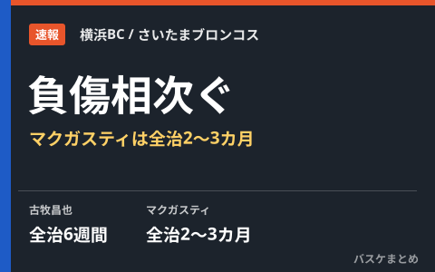
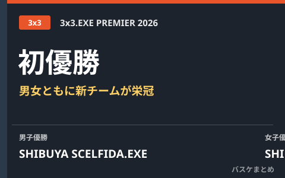

公式・メディアの新着
もっと見る ›B.LEAGUE公式サイトとバスケプロメディアの新着見出しを１日３回自動で収集しています。見出しをタップすると配信元の記事が開きます。
速報
青森ワッツ #4ジェイミン・ブレイクフィールド選手規約・規程違反による懲罰について
試合結果
りそなグループ B.LEAGUE 2025-26シーズン (2025年度) クラブ決算概要発表のお知らせ
速報
変革のアルバルク東京で危機感を語る大倉颯太「ポイントガードとしての強みを証明しないといけない」
速報
A東京がTOYOTA ARENA TOKYO開業1周年を記念した特別イベント『AOMI Beer Garden』を10月21日から24日までの4日間に開催
速報
横浜ビー・コルセアーズで完全復活、新ルールで価値を高める佐藤卓磨「外国籍選手を相手にできる力が、自分にはあると信じています」
速報
フラー譲「自分たちのバスケは出せている」常盤(群馬県)
速報
Bプレミア第4週は祝日の月曜日から試合がスタート、連敗から脱出した昨シーズンのB1王者長崎はB2王者の神戸と対戦
試合結果
決勝弾を沈めた仙台89ERSのエース、ジャレット・カルバー「自分の得意なスポットでシュートを打ち切ることを決めていました」
試合結果
東地区は全勝のチームが姿を消す、西地区は広島ドラゴンフライズが6連勝で首位をキープ!Bプレミア第3週の試合結果一覧
移籍情報
アルバルク東京がデジョン・ジャロウと契約を締結、オルブリッチ離脱の補強は同じポジションではなく196cmのウイングプレーヤー
速報
棚橋康成「力と構造を掛け算するバスケを」東京サンロッカーズ U18(東京都)
速報
川崎ブレイブサンダースの桶谷大HCが若手に求める要素「どういう風に尖った部分を出してくれるかが、試合に出せるかに繋がる」
ファンの反応・まとめブログ
もっと見る ›バスケ系まとめブログの新着見出しへのリンクです（本文は転載していません）。タップすると配信元が開きます。
移籍情報
【NBA】河村勇輝が契約解除......クリッパーズ公式が発表
移籍情報
河村勇輝がクリッパーズからウェイブ 以後はGリーグでのプレーで30チームからのオファーを狙う形か
速報
【NBA】ヨキッチが3Qでトリプルダブルを達成も...DENの評価は微妙?
速報
【NBA】ガチメンDEN、プレからヨキッチがTD達成 CHIはケイレブ・ウィルソンが多彩なスキルセットを披露 レナード・ミラーも26得点の活躍
移籍情報
【NBA】河村勇輝、14分で10得点4アシスト2スティール!2ウェイ契約へアピール成功!
速報
【Bリーグ】選手逮捕を受けて香川ファイブアローズが発表した飲酒ルールが厳しすぎ?
速報
【Bリーグ】富山県に空前のバスケブーム到来!
速報
富永啓生は何故あんなにペイント内で点を取れるのか?
試合結果
【Bリーグ2026-27】記念すべきBプレミア開幕戦はA東京が琉球に勝利!
速報
八村塁が明言!「競技人生は、富山グラウジーズで終えたい」
ピックアップ

速報
ウェンバンヤマ、プレシーズンでチーム最多6アシスト プレーメイクに…

速報
さいたまブロンコス古牧昌也が全治6週間、横浜BCはマクガスティが全…

試合結果
A東京と群馬が6勝1敗で首位並走 横浜BCは新井楽人が延長で33得…
注目の公式動画
B.LEAGUE公式YouTubeチャンネルで最新動画を見る ›
編集部まとめ記事
もっと見る ›順位・日程
10月12日の貢献度ランキング 1位はマイク・コッツァー（横浜BC）の43 日本人トップは新井 楽人
速報
ウェンバンヤマ、プレシーズンでチーム最多6アシスト プレーメイクに成長の兆し
速報
さいたまブロンコス古牧昌也が全治6週間、横浜BCはマクガスティが全治2〜3カ月でIL入り
試合結果
A東京と群馬が6勝1敗で首位並走 横浜BCは新井楽人が延長で33得点、長崎は3連勝

速報
河村勇輝が2戦目で10得点4アシストの躍動 現地実況「ユウキスーパーマン」、八村塁も14得点

試合結果
名古屋Dが開幕5連勝 齋藤拓実21得点10アシスト 秋田は宇都宮に約3年ぶり勝利

試合結果
広島がトリプルOTで開幕6連勝 長崎は群馬の5連勝ストップ 千葉Jは連敗脱出

試合結果
富山が最大29点差の大逆転 延長96-90で東京SR撃破 宇都宮は茨城下し北関東ダービー制す

試合結果
群馬クレインサンダーズが開幕5連勝 長崎ヴェルカは馬場雄大27得点で今季初勝利

試合結果
島根スサノオマジックが今季ホーム初勝利 レバンガ北海道に95-83、デニス30得点・ケイと岡田侑大がダブルダブル

順位・日程
Bプレミア日本人得点ランキング、富永啓生がリーグ全体でも首位に 黒川虎徹・岡田侑大が続く

順位・日程
Bプレミア開幕1週間 群馬・広島・名古屋D・三遠が無傷の4連勝 昨季王者長崎は4連敗発進

順位・日程
3x3.EXE PREMIER 2026、男子はSHIBUYA SCELFIDA.EXE、女子はSHINJUKU GIVERS.EXEが初優勝

試合結果
名古屋D、開幕から無傷の4連勝 新アリーナの島根に連勝 ヘンリー25得点、齋藤拓実16得点9アシスト

試合結果
富山、新アリーナ「YKK APアリーナ」こけら落としを白星で飾る 宇都宮に77-67、ウィリスジュニアがダブルダブル

試合結果
千葉J×A東京、開幕戦がBリーグ史上2度目のクアドラプルオーバータイムに もつれた60分をA東京が138-131で制す

速報
横浜BC新助っ人マクガスティが負傷離脱 全治2～3カ月でIL入り、茨城は中村功平が約6カ月ぶり復帰

速報
【Bドラフト2027】志望選手リスト更新 天理大の石井凜太郎・嶋本昇太が新たに公示 参戦表明は31名に

速報
千葉J、コステロが開幕戦で負傷しIL登録 全治4～6週間 今季早くも2人目の離脱に

試合結果
【Bプレミア開幕2連戦まとめ】東地区は群馬が唯一の2連勝、西地区は名古屋D・広島・島根・三遠が白星発進
最終更新:
2026年10月13日 19:18